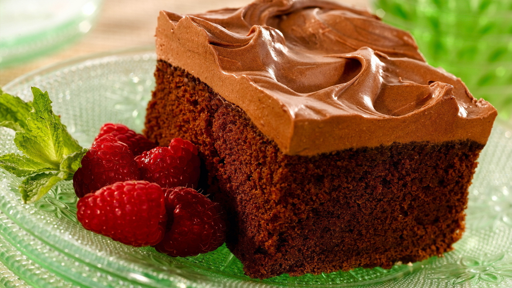

DELICIOUS FOOD
!!!!!...Eat Healthy......... Think Better...!!!

!!!!!...Eat Healthy......... Think Better...!!!
Hyderabadi special chicken biryani

Ingredients:
- 1 tablespoon ginger paste
- 1/2 cup cashews
- 1 teaspoon garam masala powder
- 2 cup basmati rice
- 1 cinnamon stick
- 1/2 cup fresh cream
- 4 red chilli
Directions:
- Now add all the marination ingredients in it. Rub well with your fingers so that the marination spreads evenly. Ideally you should leave marinated chicken in the refrigerator overnight. If you have sudden guests coming then, use a fork to bore holes in the chicken, marinate and keep aside for 1-2 hours.
- Meanwhile par boil the rice and keep aside, spread on a plate. If you overcook your rice, it will turn pasty when mixed with the chicken. Dissolve the saffron in ¼ cup milk. Heat some ghee in a pan and fry the cashews and the raisins.
- Once the ghee is sufficiently hot, add the whole spices-cinnamon, bay leaf, cardamoms, cumin. Allow them to splutter. Add whole red chillies and the marinated chicken. Add the onions, ginger and garlic paste and cook covered till the chicken is tender.
- The topmost layer should that be of rice. Now add the kesar dissolved milk and cream. Pour this evenly over the rice. Cover the lid and cook on low flame for 10-12 minutes.